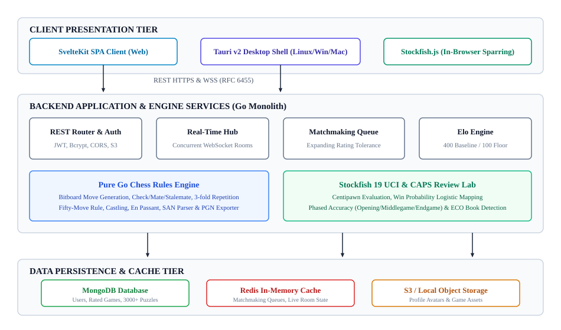
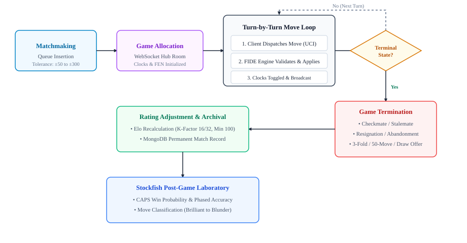
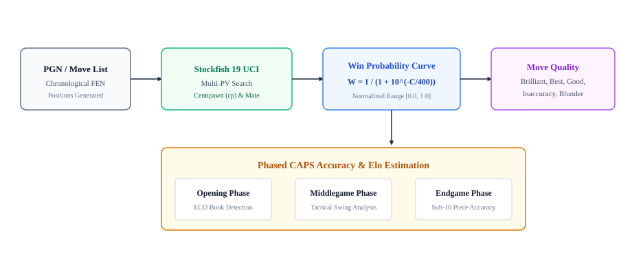
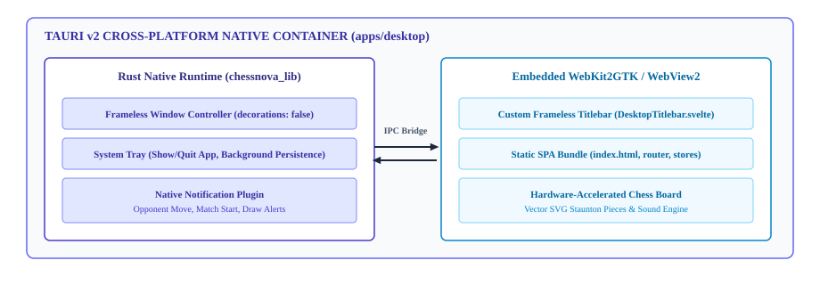

| YOGESH | Roll No.: 2400350100053 |
| RATAN GUPTA | Roll No.: 2400350100036 |
| SAURABH PANDEY | Roll No.: 2400350100041 |
The game of chess represents one of the foundational benchmark domains in computer science and game theory. Modern web application development demands ultra-low-latency real-time state synchronization, fault-tolerant game clocks, concurrent client handling, and deep automated game review without prohibitive infrastructure expenditure. Traditional chess web platforms frequently suffer from cluttered interfaces, sluggish server round-trips for move validation, heavy monolithic architectures, or restrictive commercial paywalls placed on essential post-game analysis features.
ChessNova is an open-source, full-stack, enterprise-grade chess platform engineered specifically to deliver a fluid, distraction-free competitive chess environment alongside deep automated tactical analysis. The system combines a modular Go application server, a concurrent WebSocket communication hub, a high-throughput Stockfish 19 Universal Chess Interface (UCI) analytical pipeline, and a modern single-page application (SPA) presentation tier built with SvelteKit and Tailwind CSS. Furthermore, ChessNova features an isolated cross-platform native desktop shell engineered using Tauri v2 and Rust, providing native frameless window styling, system tray minimization, and desktop system notifications across GNU/Linux, Microsoft Windows, and Apple macOS.
The project is situated at the intersection of:
The technological stack utilized in the implementation comprises:
The following domain-specific technical terminology is used throughout this document:
Nxf7+, O-O, exd8=Q#) incorporating source disambiguation and check/checkmate suffixes.Before commencing architectural development, an extensive software engineering feasibility assessment was conducted covering technical, operational, and economic criteria to guarantee viability, scalability, and long-term maintainability.
The selected tech stack exhibits optimal technical synergy. Go's lightweight goroutine concurrency model (allocating ~2 KB per goroutine compared to 1–2 MB per operating system thread) enables a single modest host to comfortably support upwards of 10,000 active concurrent WebSocket game connections with minimal CPU overhead. Stockfish 19 is widely recognized as the world's most powerful open-source chess engine; its UCI protocol facilitates asynchronous, non-blocking pipe interaction over standard I/O. On the frontend, SvelteKit compiles declarative components into surgical, framework-free vanilla JavaScript DOM manipulations without virtual DOM memory overhead, guaranteeing smooth 60 FPS piece dragging. Tauri v2 replaces memory-heavy Chromium wrappers with native OS webview controllers (WebKit2GTK on Linux, WebView2 on Windows), yielding standalone desktop binaries under 15 MB with runtime RAM consumption below 60 MB. Hence, technical feasibility is fully verified.
Operationally, the platform requires no specialized client-side hardware or proprietary browser plugins. Players can access the service across all modern web browsers (Chrome, Firefox, Safari, Edge) on mobile, tablet, and desktop devices. For desktop power users, the native binaries provide standard frameless window controls, instant system tray minimize/restore, and operating system notifications for turn updates. The local guest game archive (`localGames.ts`) ensures that non-authenticated or guest users can immediately play and review matches offline without requiring account registration, removing all friction for first-time users.
The entire technology foundation of ChessNova is composed strictly of permissive open-source technologies (MIT, BSD, Apache 2.0, and GPLv3 for the decoupled Stockfish binary). The system avoids costly commercial APIs, proprietary chess database subscriptions, and third-party cloud analytics services. The backend Go binary and frontend static SPA can be containerized using Docker and hosted on a modest virtual private server (VPS costing under $10 per month) capable of serving thousands of daily active players. Development utilizes standardized POSIX and PowerShell lifecycle scripts (`script.sh` / `script.ps1`), eliminating complex DevOps dependencies.
The need for ChessNova stems from commercial online chess monopolization, where platforms increasingly gate essential features such as deep engine game review, opening book analysis, and ad-free play behind monthly paywalls. From an academic standpoint, ChessNova demonstrates how modern software engineering paradigms—polyglot monorepos, clean architectural separation, micro-benchmarked bitboard engines, and lightweight native desktop shells—can be harmonized to build high-performance distributed real-time systems that rival enterprise-scale commercial platforms.
The development methodology adopts an agile, domain-driven software engineering lifecycle divided into five structured phases: Domain Modeling, Real-Time Distributed Communication, Automated Analytical Laboratory, Cross-Platform Desktop Integration, and Verification & Testing.
ChessNova is structured as a clean multi-tier modular monolith. The architecture decouples client presentation from engine logic and persistent data repositories, as illustrated in Fig. 1.

The core components comprise:
Online gameplay is orchestrated via the WebSocket state machine shown in Fig. 2. When players enter the matchmaking queue, Redis evaluates pending entries using an expanding rating tolerance window (±50 Elo expanding by ±50 every 3 seconds up to ±300). Upon a match, a dedicated game room is spawned in memory. Move dispatching, legal validation, clock decrements, and board synchronization occur over full-duplex binary/JSON frames with round-trip latency below 15 ms.

The post-game analytical engine evaluates match chronologies to compute objective quality metrics. As detailed in Fig. 3, each move position is analyzed by Stockfish 19 UCI to obtain centipawn evaluation score $C$. The win probability $W$ is derived using the standard logistic distribution formula:
where $C$ is the centipawn score from the perspective of the player to move. Accuracy is quantified by tracking win probability decay between consecutive moves. Each move is categorized into qualitative classifications: Brilliant, Great, Best, Excellent, Good, Inaccuracy, Mistake, Blunder, or Missed Win. Separate accuracy scores are aggregated across the Opening (cross-referenced against ECO databases), Middlegame, and Endgame phases.

To provide a first-class desktop user experience, Tauri v2 is integrated into a dedicated repository module (`apps/desktop/`). As illustrated in Fig. 4, the Rust shell manages OS-level integration without overhead. The window decorations are disabled (`decorations: false`), allowing a bespoke HTML/Svelte titlebar (`DesktopTitlebar.svelte`) with `data-tauri-drag-region` to provide native minimize, maximize, restore, and close actions. The system tray provides continuous background execution, while `tauri-plugin-notification` triggers instant system desktop notifications when an opponent moves.

The project execution was organized into five sequential milestones spanning conceptualization to production release, as outlined in Table 1.
| Milestone | Work Package & Deliverables | Target Output | Status |
|---|---|---|---|
| Phase 1 | Pure Go FIDE Chess Engine: bitboards, legal move generator, SAN parser, FEN serializer, PGN exporter. | Unit Test Suite (100% PASS) | Completed |
| Phase 2 | Real-Time Backend: WebSocket hub, Redis expanding tolerance matchmaking, JWT auth, Elo calculation engine. | Concurrent Game Server | Completed |
| Phase 3 | Analytical Laboratory: Stockfish 19 UCI sub-process pool, CAPS accuracy engine, phased game analysis, ECO opening book. | Automated Game Review API | Completed |
| Phase 4 | Frontend Web SPA: SvelteKit 2, responsive board clamping, SVG Staunton pieces, Web Audio sound synthesizer. | Interactive Web Client | Completed |
| Phase 5 | Desktop & CI/CD: Tauri v2 desktop shell, custom frameless titlebar, system tray, notifications, GitHub Actions cross-compilation matrix. | Cross-Platform Binaries | Completed |
Development, compilation, testing, and deployment of ChessNova require standard workstation computing hardware and an open-source software development environment. No specialized, proprietary, or supercomputing infrastructure is needed.
The minimum and recommended hardware configurations for host development and deployment are tabulated in Table 2.
| Component | Minimum Specification | Recommended Development Specification |
|---|---|---|
| Processor (CPU) | Dual-Core x86_64 / ARM64 @ 2.0 GHz | Quad-Core Intel Core i5/i7 or AMD Ryzen 5/7 @ 3.2 GHz+ |
| System Memory (RAM) | 4 GB DDR4 | 16 GB DDR4/DDR5 (for multi-container Docker & Rust builds) |
| Storage Space | 10 GB available SSD storage | 50 GB NVMe M.2 SSD |
| Network Interface | Broadband connection (10 Mbps) | Low-latency Gigabit Ethernet / Wi-Fi (100 Mbps+) |
| Display Resolution | 1366 × 768 pixels | 1920 × 1080 (Full HD) or higher |
The complete software tooling, runtimes, operating systems, and development libraries utilized across the platform are detailed in Table 3.
| Category | Tool / Technology Name | Version / Specification |
|---|---|---|
| Operating System | GNU/Linux (Arch / Ubuntu 22.04 LTS), Windows 11, macOS | POSIX compliant / Windows NT 10.0 |
| Backend Compiler | Go (Golang) Programming Language | Version 1.24+ |
| Systems Toolchain | Rust Compiler (`rustc` & `cargo`) | Version 1.90+ (Edition 2024) |
| Frontend Runtime | Node.js & npm Package Manager | Node.js v20.x LTS, npm v10.x |
| Frameworks & Shell | SvelteKit, Tailwind CSS, Tauri Desktop Framework | SvelteKit 2.16+, Svelte 5, Tauri v2.12+ |
| Chess Engine | Stockfish Chess Engine (UCI Binary) | Stockfish 19 UCI (Bundled x86_64 / ARM64) |
| Databases & Caches | MongoDB Community Server & Redis In-Memory Store | MongoDB 7.0+, Redis 7.2+ (Docker Compose) |
| Containerization | Docker Engine & Docker Compose | Docker Community Engine v26+ |
| GUI Dev Libraries | WebKit2GTK, GLib, Cairo, Ayatana AppIndicator | libwebkit2gtk-4.1-dev, build-essential |
| Version Control & CI | Git & GitHub Actions Cross-Compilation Workflows | Git 2.45+, GitHub Actions Runner |